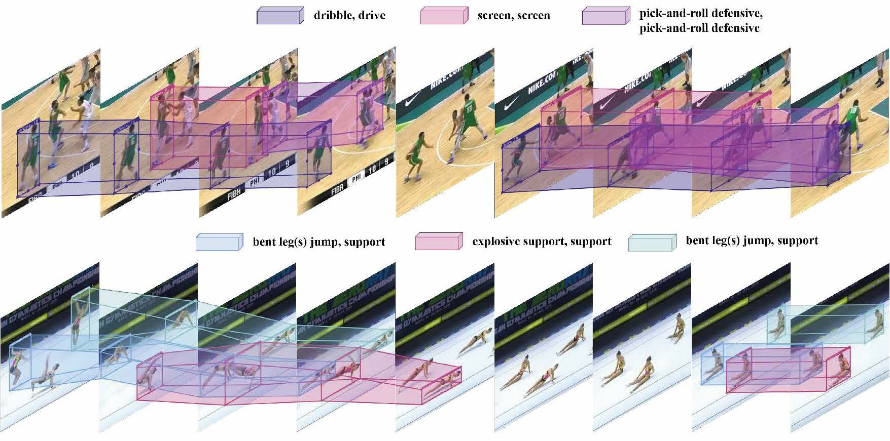
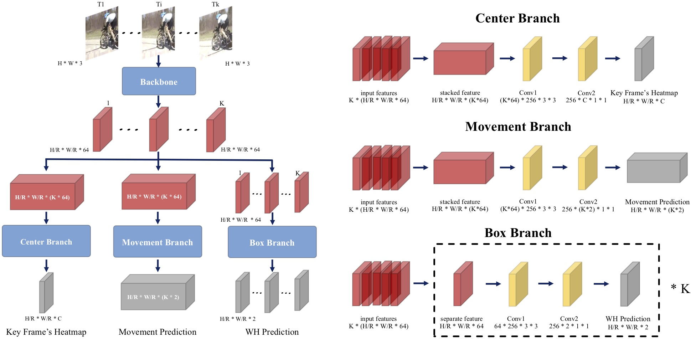

I am currently a fourth-year Ph.D. student at MMLab in Department of Information Engineering, CUHK, advised by Prof. Dahua Lin.
Before that, I received my Master's degree from Nanjing University in 2022, supervised by Prof. Limin Wang, and my Bachelor's degree also from Nanjing University in 2019.
My research area is 3D vision, especially 3D Scene Reconstruction and Generation, and video generation.
• 06/2025 Two papers accepted by ICCV 2025.
• 04/2025 One paper accepted by CVPR Workshop 2025.
• 09/2024 Two papers accepted by NeurIPS 2024.
• 02/2024 One paper accepted by CVPR 2024.
• 02/2024 One paper accepted by TIP.
• 06/2023 One paper accepted by ICCV 2023.
• 10/2021 I got the National Scholarship.
• 07/2021 One paper accepted by ICCV 2021.
• 06/2021 We got the first place in the HC-STVG track of the CVPR 2021 workshop Person in Context.
• 04/2021 I was a student co-organizer of ICCV 2021 Workshop DeeperAction.
• 10/2020 I got the National Scholarship.
• 06/2020 One paper accepted by ECCV 2020.
We use identity-specific embeddings and structural learning with depth/surface-normal cues to handle complex multi-person interactions in human-centric video generation from a single image. We also contribute a dataset expansion with 25K multi-human interaction videos.
We introduce DirectLayout, a framework that directly generates numerical 3D layouts from text descriptions, without relying on intermediate representations and constrained optimization. The model employs Chain-of-Thought reasoning and design CoT-Grounded Generative Layout Reward to enhance spatial planning and generalization. Extensive experiments demonstrate that DirectLayout achieves impressive semantic consistency, generalization and physical plausibility.
Proc-GS combines procedural modeling with 3D Gaussian Splatting, enabling efficient generation of diverse buildings with high rendering quality. This integration allows scalable city creation with precise control for both real and synthetic scenarios.
We propose camera-controllable human image animation task for generating video clips that are similar to real movie clips. To achieve this, we collect a dataset named HumanVid, and a baseline model combined by Animate Anyone and CameraCtrl. Without any tricks, we show that a simple baseline trained on our dataset could generate movie-level video clips.
We present a simple end-to-end action tube detection method, which reduces the dense hand-crafted anchors, captures longer temporal information and explictly predicts the action boundary.

MultiSports: A Multi-Person Video Dataset of Spatio-Temporally Localized Sports Actions Yixuan Li, Lei Chen, Runyu He, Zhenzhi Wang, Gangshan Wu, Limin Wang.
ICCV, 2021
one track of ICCV2021, ECCV2022 Workshop DeeperAction.
paper /
code
A fine-grained and large-scale spatial-temporal action detection dataset with 4 different sports, 66 action categories.

Actions as Moving Points Yixuan Li*, Zixu Wang*, Limin Wang, Gangshan Wu.
ECCV, 2020
paper /
code
A conceptually simple, computationally efficient, and more precise anchor-free action tubelet detector.
Professional Services
• Conference reviewer for CVPR, ICCV, ECCV, NeurIPS.
• Journal reviewer for IJCV, Pattern Recognition, TCSVT, Neurocomputing.
• Co-organizer of DeeperAction Workshop at ICCV 2021 and ECCV 2022.
{kind=link}